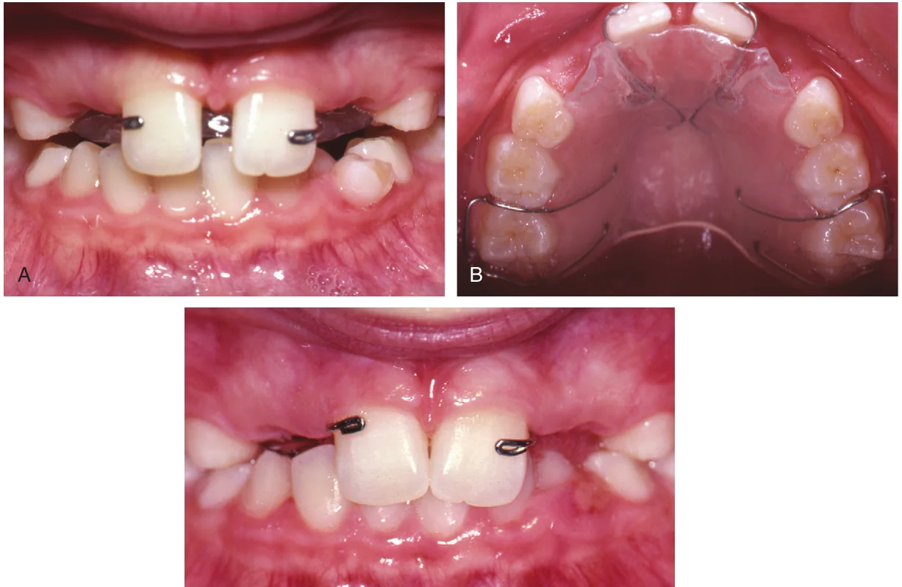

نسخه استخراجشده؛ ترجمه یا تأیید علمی انجام نشده است. وضعیت: captured
فنر، جایی است که نیرو تولید میشود. چهار نوع رایج:
| فنر | کاربرد |
|---|---|
| Finger spring | حرکت مزیودیستالی دندان در امتداد قوس |
| Z-spring / Double cantilever | حرکت لبیالی ثنایا، مثلاً در کراسبایت قدامی |
| T-spring | حرکت باکالی پرمولر یا کانین |
| Labial bow | عقب بردن یا نگه داشتن ثنایاها |
💡 اصل مشترک همه: هر فنر برای یک جهت طراحی شده است. استفاده در جهت اشتباه یعنی نیروی غیرقابلکنترل — فنر یا کار نمیکند یا دندان را به سمتی میبرد که نمیخواستی.
👉 Labial bow استثنای جالبی است: بسته به فعالسازی، هم میتواند فعال باشد (عقب بردن ثنایا) و هم منفعل (فقط نگه داشتن آنها بهعنوان ریتینر). یک قطعه، دو نقش کاملاً متفاوت.
⚠️ محل خروج فنر از آکریل هم مهم است: فنری که از نقطهی نامناسب بیرون بیاید، حتی اگر نوع درستی باشد، بردار نیروی اشتباهی میدهد.
همان قانونی که در آرچوایر دیدی، اینجا هم حاکم است: سختی فنر با توان چهارم قطر سیم افزایش مییابد و با توان سوم طول کاهش مییابد.
چون هر دو رابطه توانیاند، تغییرهای کوچک اثرهای بزرگ دارند. پیامد عملی:
👉 به همین دلیل به فنرها حلقه (helix) اضافه میکنیم: حلقه طول مؤثر سیم را بدون اشغال فضای بیشتر زیاد میکند، پس نیرو نرمتر و پایدارتر میشود.
💡 «بازهی فعالیت طولانیتر» یعنی چه؟ یعنی فنر در طول یک ماه، بهجای اینکه نیرویش سریع افت کند و بیاثر شود، نیروی نسبتاً یکنواختی میدهد. همان مزیتی که NiTi در آرچوایر دارد، اینجا با هندسه به دست میآید نه با آلیاژ.

دو راه برای تولید نیرو در دستگاه متحرک وجود دارد و تفاوتشان بنیادی است:
| فنر | اسکرو | |
|---|---|---|
| نوع نیرو | پیوسته و کاهنده | متناوب؛ هر چرخش یک جهش |
| فعالسازی | توسط درمانگر | توسط بیمار یا والدین در خانه |
| کنترل جهت | دقیقتر | محدود به جهت شکاف آکریل |
مزیت اصلی اسکرو در شیوهی فعالسازی آن است: بیمار میتواند در خانه فعال کند، پس فاصلهی ویزیتها طولانیتر میشود. اما همین مزیت، ریسک هم میسازد — کنترل از دست درمانگر خارج میشود.
⚠️ هر ربع دور چرخش اسکرو معمولاً حدود ۰٫۲۵ میلیمتر باز میکند؛ یعنی یک دور کامل حدود ۱ میلیمتر. دستور چرخش را دقیق و مکتوب بده (مثلاً «یکچهارم چرخش، هر پنجشنبه صبح»)، وگرنه بیمار بیش از حد میچرخاند؛ درد ایجاد میشود و اسکرو سریعتر از پاسخ بافت باز میشود، پس دستگاه بهجای باز کردن قوس، بهتدریج از روی دندانها کنار میرود.
👉 نکتهی عملی: کلید اسکرو را به بیمار بده و در همان جلسه، یک بار جلوی خودت بچرخاند. توضیح شفاهی بدون تمرین، تقریباً همیشه اشتباه اجرا میشود.
نوع سؤال: ساخت کلمه · 5 خانه
حروف منبع: ر · ی · ن · گ · ف